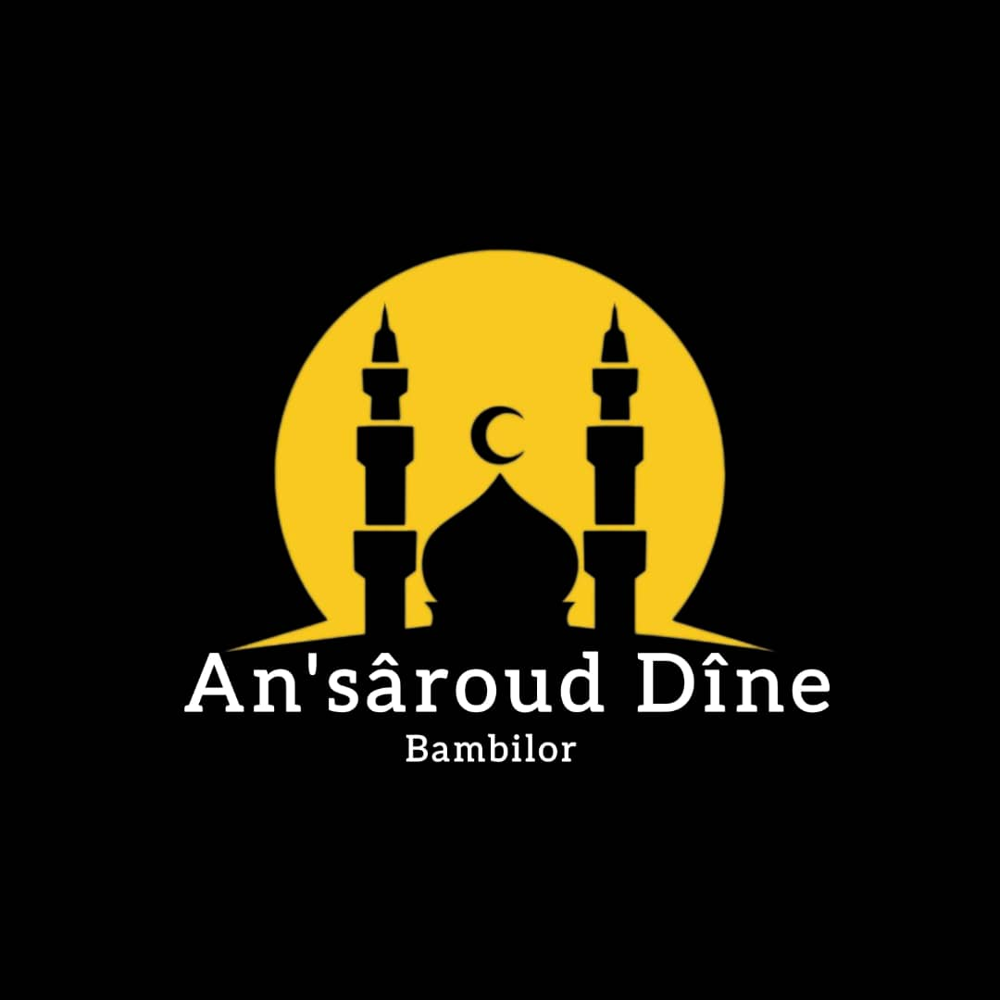
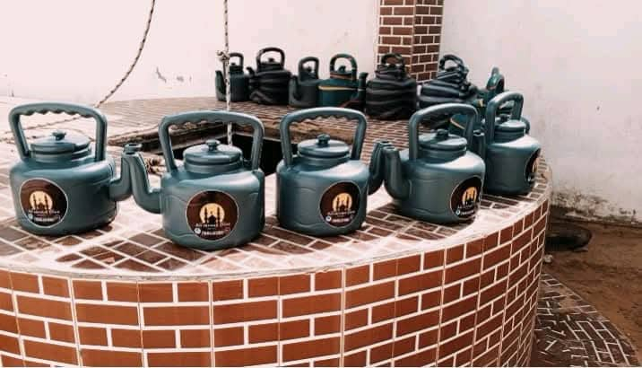
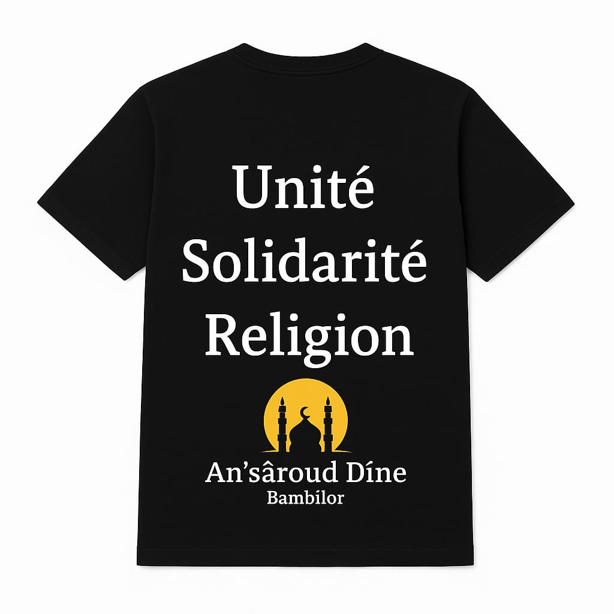
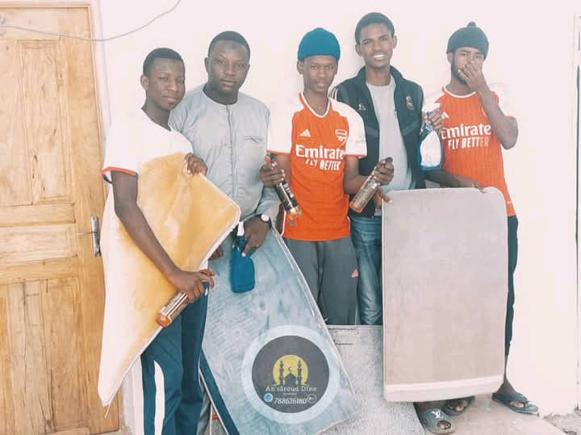
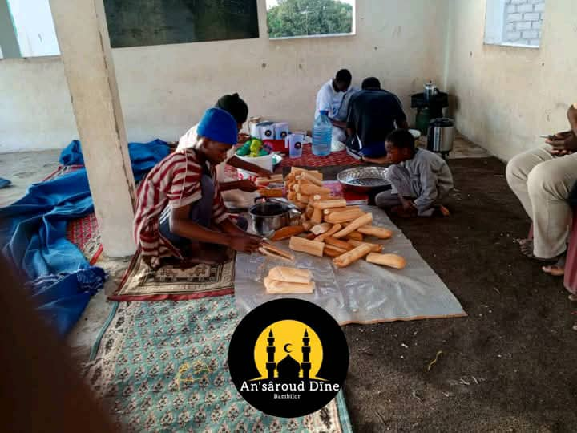
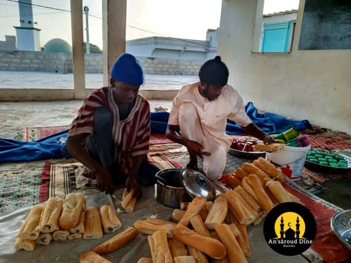
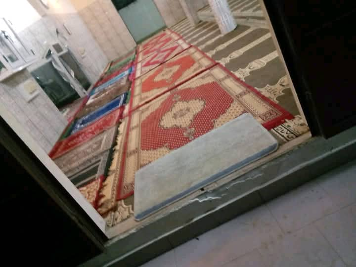
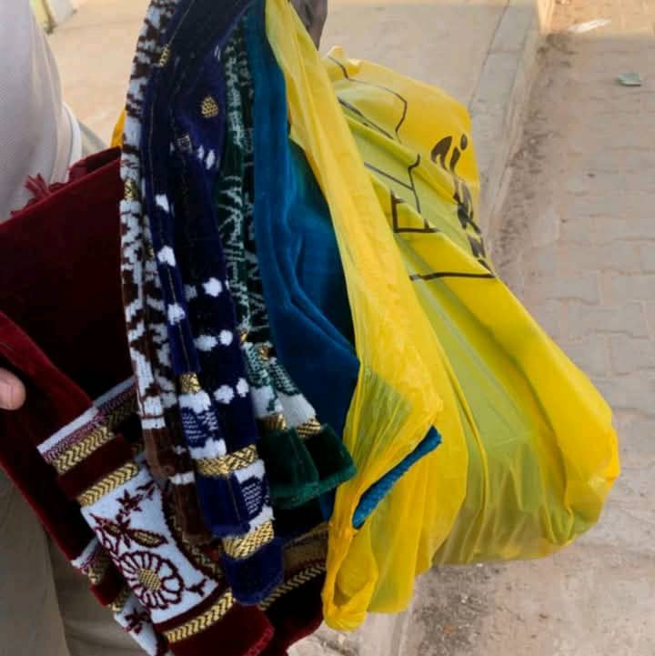
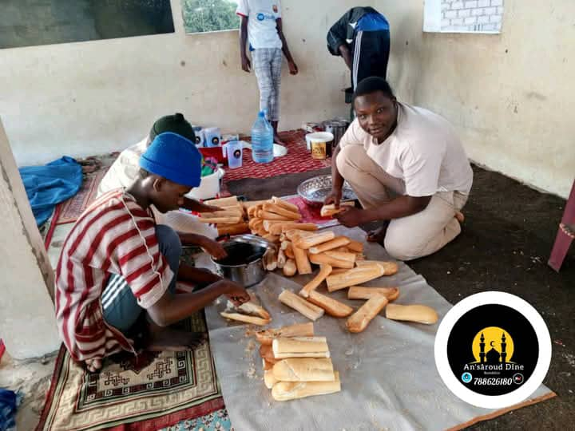

Bienvenue
Bienvenue sur le site officiel de l'association AN'SAROUD DINE BAMBILOR.


Association Islamique - Unité - Solidarité - Religion
Bienvenue sur le site officiel de l'association AN'SAROUD DINE BAMBILOR.
Association dédiée à l'éducation islamique et à la solidarité.
L’association AN’SAROUD DINE Bambilor est une organisation religieuse et sociale dédiée à la promotion des valeurs de l’Islam, de la solidarité et de l’éducation au sein de la communauté. Fondée à Bambilor, notre mission principale est de contribuer au développement spirituel, moral et social des populations, en particulier des jeunes. Nous œuvrons pour inculquer les enseignements islamiques basés sur la paix, le respect, la tolérance et l’entraide. 🎯 Nos objectifs 📖 Promouvoir l’enseignement du Coran et de la religion islamique 🧒 Encadrer et former les jeunes dans les valeurs morales 🤝 Renforcer la solidarité et l’entraide communautaire 🕌 Organiser des activités religieuses (conférences, prêches, événements islamiques) 📚 Participer à l’éducation et à la sensibilisation sociale 🌍 Nos actions L’association organise régulièrement : Des cours d’apprentissage du Coran Des conférences religieuses Des journées de sensibilisation Des actions sociales (aides aux démunis, distributions, etc.) Des événements lors des grandes fêtes islamiques 💛 Notre vision Nous aspirons à bâtir une communauté unie, forte dans sa foi et engagée dans le développement social, tout en respectant les valeurs islamiques et humaines.










Email : contact@ansaroudine.com
78 862 61 80